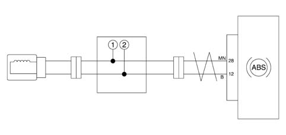
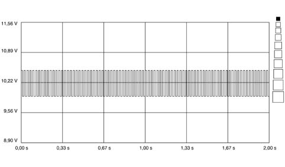
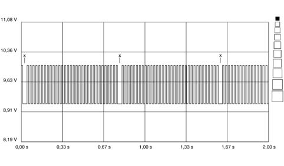
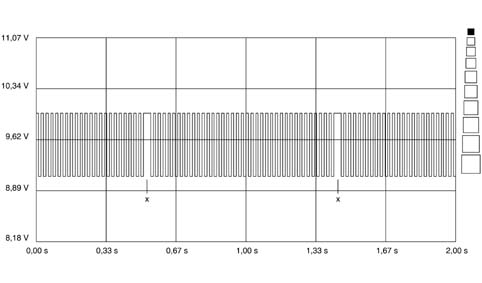
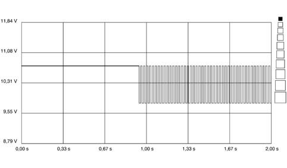
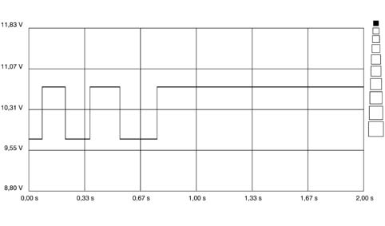

3340AA SENSOR-FLYWHEEL SIGNAL CHECK
- Path
- Test > 33 BRAKING SYSTEM > 3340 ANTI-LOCK BRAKE SYSTEM (ABS) > 3340A ABS CHECK/ADJUSTMENT DEVICES > 3340AA SENSOR-FLYWHEEL SIGNAL CHECK
- Kind
- test / check procedure
- Applies to
- all engines; all production periods
- Interactive page
- https://sloeber94.github.io/elrnDB-fPnd/en/#/169000829
Applies to: all engines; all production periods
- Connect switch AD-266 between the wiring and the ABS sensor

- Insert the diagnostic equipment probes in bushes 1 and 2 of the adapator.
- After the diagnostic equipment has been switched on, enter the "INSTRUMENT" ambient.
- Under the "VOLTMETER" function select 20V as the end of scale and 2 seconds as the basic time.
- Manually rotate the wheel and when the speed is 4-6 km/h press the START button.
Check that the signal acquired looks the one illustrated without "holes".

Regular signal between sensor-flywheel (Rotation speed: 4-6 Km/h)

Irregular signal due to the presence of magnetic slag (point X) on the flywheel magnetic race (Rotation speed 4-6 km/h).

Irregular signal due to the presence of magnetic slag (point X) on the flywheel magnetic race (Rotation speed 4-6 km/h).

Irregular signal for wheel rotating after Start

Irregular signal due to wheel stopped during acquisition